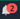

Amazon SageMaker Studio UI Overview
Amazon SageMaker Studio extends the capabilities of JupyterLab with custom resources that can speed
up your Machine Learning (ML) process by harnessing the power of AWS compute. Previous users
of JupyterLab will notice the similarity of the user interface. The most prominent additions are
detailed in the following sections. For an overview of the original JupyterLab interface, see
The JupyterLab
Interface
The following image shows the default view upon launching Amazon SageMaker Studio. The left navigation panel displays all top-level categories of features,
and a Studio Home page is open in the main working area. Come back to
this central point of orientation by choosing the Home (
 ) icon at any time, then selecting the Home node in the
navigation menu.
) icon at any time, then selecting the Home node in the
navigation menu.
Try the Getting started notebook for an in-product hands-on guide on how to set up and get familiar with Amazon SageMaker Studio features. On the Quick actions section of the Studio Home page, choose Open the Getting started notebook.
Note
This chapter is based on Studio's updated user interface (UI) available on version v5.38.x and above on JupyterLab3.
To retrieve your version of Studio UI, from the Studio Launcher, open a System Terminal, then
Run
conda activate studioRun
jupyter labextension listSearch for the version displayed after
@amzn/sagemaker-ui versionin the output.
For information about updating Amazon SageMaker Studio, see Shut down and Update SageMaker Studio.
Studio Home page
The Home page provides access to common tasks and workflows. In particular, it includes a list of Quick actions for common tasks such as Open Launcher to create notebooks and other resources and Import & prepare data visually to create a new flow in Data Wrangler.The Home page also offers tooltips on key controls in the UI.
The Prebuilt and automated solutions help you get started quickly with SageMaker's low-code solutions such as Amazon SageMaker JumpStart and Autopilot.
In Workflows and tasks, you can find a list of relevant tasks for each step of your ML workflow that takes you to the right tool for the job. For example, Transform, analyse, and export data takes you to Amazon SageMaker Data Wrangler and opens the workflow to create a new data flow, or View all experiments takes you to SageMaker Experiments and opens the experiments list view.
Upon Studio launch, the Home page is open in the main working area. You can customize your SageMaker Home page by choosing Customize Layout at the top right of the Home tab.
Studio layout
The Amazon SageMaker Studio interface consists of a menu bar at the top, a collapsible left sidebar displaying a variety of icons such as the Home icon and the File Browser, a status bar at the bottom of the screen, and a central area divided horizontally into two panes. The left pane is a collapsible navigation panel. The right pane, or main working area, contains one or more tabs for resources such as launchers, notebooks, terminals, metrics, and graphs, and can be further divided.
Report a bug in Studio or choose the notification icon (  ) to view notifications from Studio, such as new Studio versions and new SageMaker features, on the right corner of the menu bar. To update to a new version of Studio, see Shut Down and Update SageMaker Studio and Studio Apps.
The following sections describe the Studio main user interface areas.
Left sidebar
The left sidebar includes the following icons. When hovering over an icon, a tooltip displays the icon name. A single click on an icon opens up the left navigation panel with the described functionality. A double click minimizes the left navigation panel.
| Icon | Description |
|---|---|
|
|
Home Choose the Home icon to open a top-level navigation menu in the left navigation panel. Using the Home navigation menu, you can discover and navigate to the right tools for each step of your ML workflow. The menu also provides shortcuts to quick-start solutions and learning resources such as documentation and guided tutorials. The menu categories group relevant features together. Choosing Data, for example, expands the relevant SageMaker capabilities for your data preparations tasks. From here, you can prepare your data with Data Wrangler, create and store ML features with Amazon SageMaker Feature Store, and manage Amazon EMR clusters for large-scale data processing. The categories are ordered following a typical ML workflow from preparing data, to building, training, and deploying ML models (data, pipelines, models, and deployments). When you choose a specific node (such as Data Wrangler), a corresponding page opens in the main working area. Choose Home in the navigation menu to open the Studio Home page |
|
|
File Browser The File Browser displays lists of your notebooks, experiments, trials, trial components, endpoints, and low-code solutions. Whether you are in a personal or shared space determines who has access to
your files. You can identify which type of space you are in by looking at the top
right corner. If you are in a personal app, you see a user icon followed by
For hierarchical entries, a selectable breadcrumb at the top of the browser shows your location in the hierarchy. |
|
|
Property Inspector The Property Inspector is a notebook cell tools inspector which displays contextual property settings when open. |
|
|
Running Terminals and Kernels You can check the list of all the kernels and terminals currently running across all notebooks, code consoles, and directories. You can shut down individual resources, including notebooks, terminals, kernels, apps, and instances. You can also shut down all resources in one of these categories at the same time. For more information, see Shut Down Resources. |
|
|
Git You can connect to a Git repository and then access a full range of Git tools and operations. For more information, see Clone a Git Repository in SageMaker Studio. |
|
|
Table of Contents You can navigate the structure of a document when a notebook or Python files are open. A table of contents is auto-generated in the left navigation panel when you have a notebook, Markdown files, or Python files opened. The entries are clickable and scroll the document to the heading in question. |
|
|
Extensions You can turn on and manage third-party JupyterLab extensions. You can check the already installed extensions and search for extensions by typing the name in the search bar. When you have found the extension you want to install, choose Install. After installing your new extensions, be sure to restart JupyterLab by refreshing your browser. For more information,
see JupyterLab Extensions documentation |
Left navigation panel
The left navigation panel content varies with the Icon selected in the left sidebar.
For example, choosing the Home icon displays the navigation menu. Choosing File browser lists all the files and directories available in your workspace (notebooks, experiments, data flows, trials, trial components, endpoints, or low-code solutions).
In the navigation menu, choosing a node brings up the corresponding feature page in the main working area. For example, choosing Data Wrangler in the Data menu opens up the Data Wrangler tab listing all existing flows.
Main working area
The main working area consists of multiple tabs that contain your open notebooks, terminals, and detailed information about your experiments and endpoints. In the main working area, you can arrange documents (such as notebooks and text files) and other activities (such as terminals and code consoles) into panels of tabs that you can resize or subdivide. Drag a tab to the center of a tab panel to move the tab to the panel. Subdivide a tab panel by dragging a tab to the left, right, top, or bottom of the panel. The tab for the current activity is marked with a colored top border (blue by default).
Note
All feature pages provide in-product contextual help. To access help, choose Show information. The help interface provides a brief introduction to the tool and links to additional resources, such as videos, tutorials, or blogs.